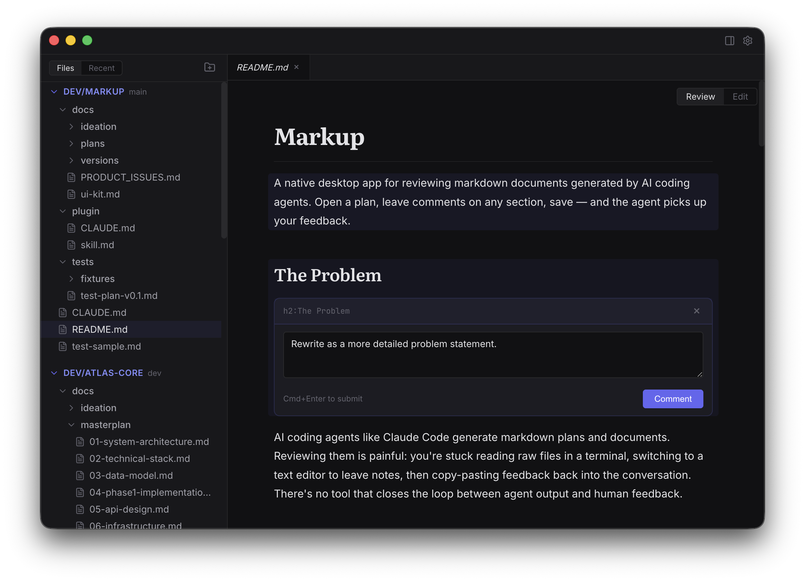

Review AI plans.
Leave feedback that sticks.
A native macOS app for reviewing markdown from AI coding agents.
Comment on any section. Save. The agent picks up your feedback.
Requires macOS · Apple Silicon

How it works
Five steps. One seamless loop between you and your AI agent.
Agent generates a plan
Your AI coding agent creates a markdown document — an architecture plan, feature spec, or implementation guide.
Open in Markup
Beautiful rendered markdown — not raw text in a terminal. Literata headings, Inter body, JetBrains Mono code.
Click to comment
Click any block — headings, paragraphs, tables, code blocks, lists — and leave your feedback inline.
Save
Comments are embedded as invisible HTML comments right in the file. No database, no sync service.
Agent addresses feedback
The agent reads the file, finds your comments, makes the requested changes, and removes resolved comments.
Built for the review loop
Everything you need to review, navigate, and edit AI-generated documents.
Review
- Beautiful rendered markdown with custom typography
- Click any block to add inline comments
- Document-level comments for general feedback
- Comments saved as HTML — invisible in other renderers
Navigate
- Multi-folder workspace, persisted across sessions
- Tree view and Recently Updated (live-refreshing)
- Tabbed editor with VS Code-style preview mode
- Document outline in the right panel
Edit
- Toggle between Review and Edit mode (Cmd+E)
- CodeMirror 6 with markdown syntax highlighting
- File watching — detects external changes
- Autosave with conflict resolution
The secret sauce
Your comments become part of the file — invisible to other renderers, machine-parseable by agents.
## Architecture
The system uses microservices.
<!-- @markup {"type":"inline","anchor":"h2:Architecture"}
Consider a modular monolith instead. -->No database. No sync service. Just the file.
Works with Claude Code out of the box
Markup ships with a Claude Code plugin. Add it to your project and the agent learns how to parse @markup comments, address your feedback, and remove resolved comments automatically.